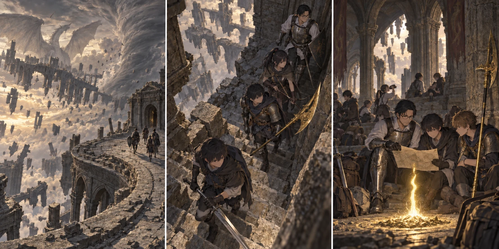

DAY84 / TURN1−94
急ぐために、道をつなぐ。

陸「一人ずつなら行ける。ここは走らないで」
【DAY84｜落ちない瓦礫】空に浮いた石を見るたび、陸は踏み出す直前に足を止めそうになった。落ちないから安全なのか、いつ落ちるか分からないのか。この世界へ来て八十日以上が過ぎても、慣れたことにはならない。先生は先読みの頁と目の前の道を交互に見て、最短の通路を選んだ。見える宝へ一本ずつ道を伸ばしていく時間は、もう残さない。
広い屋根の向こうで竜が動いた。大きな翼が一度広がるだけで、崩れた柱の影が消える。「相手をしない。入口へ」。十三人は攻撃のために散らばらず、通過するための間隔を取った。先生が最後の足を確かめ、陽太と健太が通路側へ盾を向ける。あれを倒せば何かが手に入るかもしれない。そう考えた視線ごと、陸は正面へ戻した。
獣墓の奥では、柱の裏から獣人が身体を起こした。矢と魔力弾で近づく足を止め、広い部屋へ追い込まれないよう通路を抜ける。後ろからの声は蓮がつなぎ、最後尾の先生まで届いたところで隊列を縮めた。通った場所が全部安全になったわけではない。敵を倒し尽くす代わりに、皆が先へ出る時間を作っていた。
【踏査｜2d6＝3・1＋4＝8】近道に見えた石の並びは、十三人が続けて渡れる幅ではなかった。先頭だけが抜けても意味がない。陸は大剣を背へ回し、膝を曲げて足場を確かめた。「一人ずつなら行ける。ここは走らないで」。怖いから止まった、と思われるのが以前なら嫌だった。今は、誰かが同じ場所で足を滑らせる方が怖い。
先生は急かさず、その代わり確認の済んだ区間では歩みを速めた。慎重さと速度を、全部同じにしない。陸が次の足場へ着くと、蓮が人数を送る。十三人目の先生が渡りきって初めて、次の角へ隊列が動く。その繰り返しに、思った以上の時間がかかった。
祝福「崩れゆく獣墓、奥部」。そして「竜巻を臨む露台」。実際に足を運んだ場所を一つずつ解放し、全員の登録を確かめる。帰る際には今日と同じ道を全部歩かずに済む。しかし、まだ行っていない場所まで届くわけではない。先生は地図へ線を加えながら、その先の余白を残した。
露台へ出ると、竜巻の音が急に大きくなった。花は弓を握ったまま息を呑む。ここでは遠くを見ることさえ、足元から注意を奪う。「こんな所に、建物を建てた人がいるんだ」。千夏がぽつりと言った。戦っている時には思わなかったことを、その一言で考えてしまう。誰かがここで暮らし、歩いた階段の残りを、自分たちは渡っていた。
【竜の聖堂】夕方、最後の階段を越えた。先生は広間へ入る前に止まり、まず祝福へ全員を集めた。十三人。怪我はない。道中で新たな戦果を稼ぐ余裕はなかったが、誰かを運ぶために足を止めることもなかった。陸が大剣を下ろすと、背中の汗が冷えていることに気づいた。
「今日のうちには、入らないんですね」。蓮は、神肌のふたりが待つ方角を見た。先生は時計代わりの記録を閉じた。「足場で使った時間は、もう使った。今から戦うなら、その分を短くできる敵かどうかだ」。一体を倒したら終わる相手ではない。倒れた一方が戻る間も、もう一方の攻撃を受け続ける。疲れたところから始めて、途中で日を戻すことはできない。
【先読みを、配置にする】先生は地図の余白へ二つの丸を描いた。「太い方は、俺と陽太、健太。細い方は直人と大地を中心にする」。十三人の攻撃を最初から全部一体へ重ねると、自由になったもう一体が後ろへ来る。弓と術は柱の間から射線を作り、二つの戦いを必要な時につなぐ。
「柱に隠れていれば、ずっと安全ですか」。花の問いに先生は首を振った。黒炎の射線を切れても、柱が壊れることはある。貴種が身体を膨らませて転がり始めれば、そこへ全員を集めるわけにもいかない。眠らせる道具が有効だという頁もあったが、今日の荷物にはない。持っている力で組むほかなかった。
葵は、光をかける六人の名前を自分で書いた。先生、直人、大地、健太、陽太、陸。「最初だけ、一度近くへ集まってください。その後は離れて大丈夫です」。持続回復の時間が切れたら、自分に残るのは通常の回復一回分。紬と別々の場所へ立ち、片方が狙われた時にもう片方まで巻き込まれないようにする。今度は、使えない術の相談ではなかった。
【教会の同じ一日｜2d6＝5・2＋4＝11】三頭分の獲物が戻り、航の矢はまた六本減った。凛と真央が食材を受け取り、結衣が翌日の作業を並べる。赤月までの日付は、こちらでも一つずつ減っている。主力が帰ってくる日に食べるものを残す。その仕事は、遠くのボスが倒れたかどうかを知らなくても続けられた。
【DAY84｜夕】竜の聖堂で休息し、瓶と術を整えた。神肌との戦闘判定は、今日はまだ振らない。先生は残り十五日の欄に、明日の一戦を書いた。八十九日目の帰還、九十日目の赤月、そこから先の終盤戦。まだ線はつながる。ただし、今日の遅れをなかったことにはしない。陸は最後に一度だけ外を見た。落ちない石は、相変わらず空に浮いていた。
今回の判定記録
| 判定 | 出目 | 補正 | 合計 |
|---|
| route | 3+1 | 4 | 8 |
| base | 5+2 | 4 | 11 |
抽選前の条件 · 抽選結果